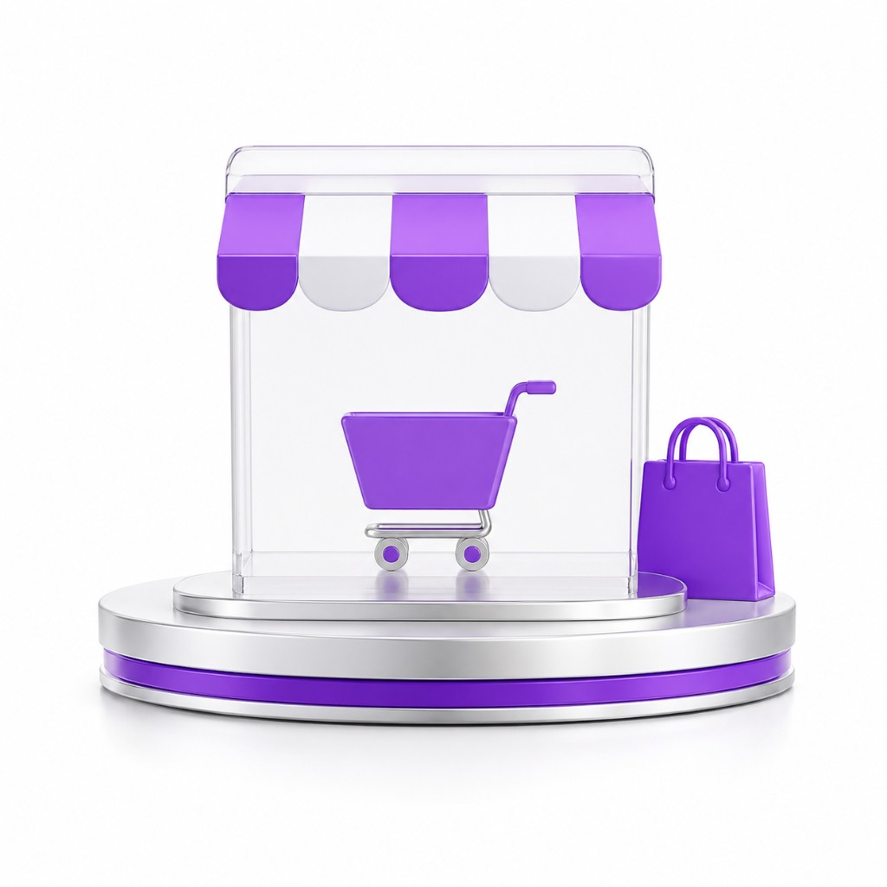
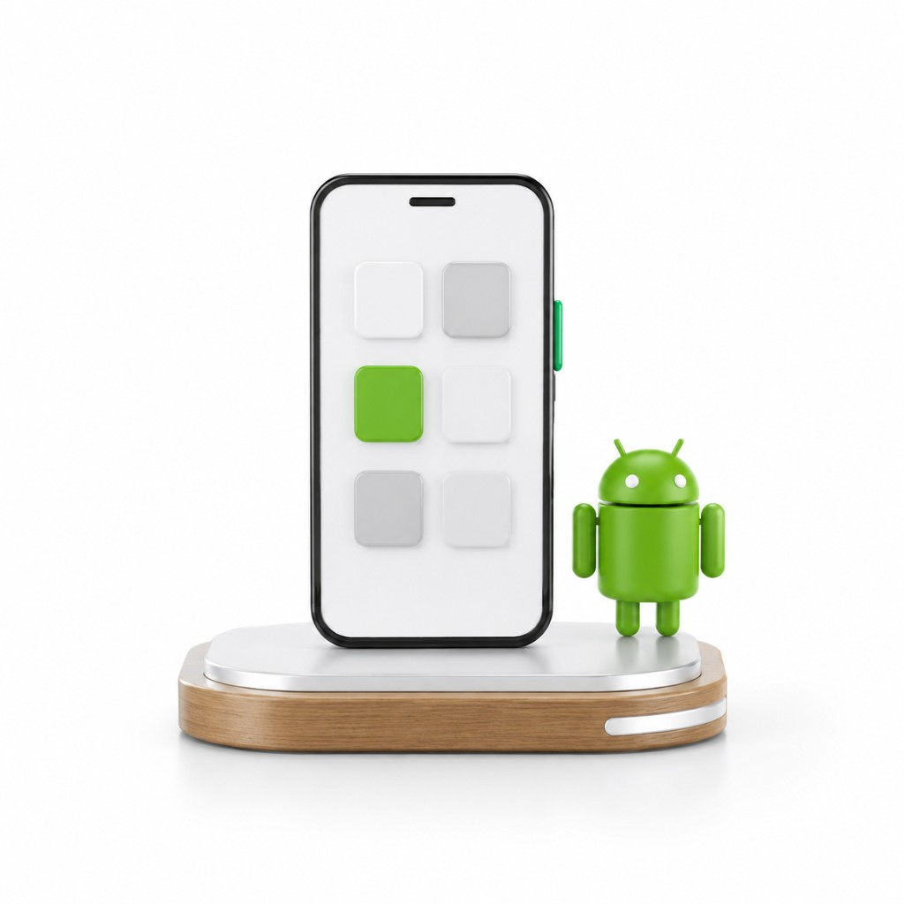
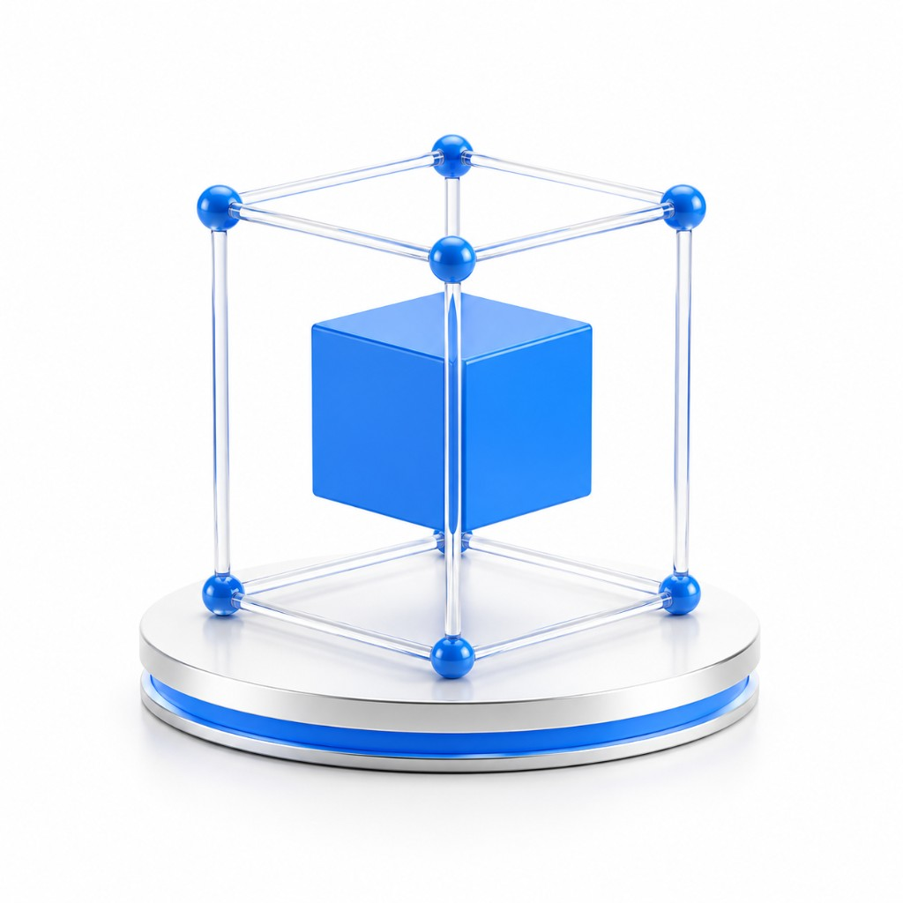

Вайб-кодинг
Быстро собираю сайты, прототипы и приложения с помощью нейросетей — чтобы проверить идею и получить первую рабочую версию.
ПодробнееМеня зовут Евгений Ворошилов. Помогаю специалистам, предпринимателям, ремесленникам и бизнесу переходить от идеи к понятному рабочему решению — с ясной структурой, текстом и визуальной подачей.

Я работаю на стыке искусственного интеллекта, веб-дизайна, вайб-кодинга, маркетинга и текстов. Для меня важно, чтобы проект выглядел понятно, объяснял ценность и помогал человеку сделать следующий шаг.
Вайб-кодинг — моё основное направление сейчас. Я использую нейросети, чтобы быстрее собирать сайты, лендинги, прототипы и Android-приложения. Такой подход помогает быстро проверить идею, собрать первую версию продукта и довести её до рабочего состояния.
Искусственный интеллект для меня — практический инструмент, а не модное слово.
С его помощью можно упростить рутину, ускорить обработку обращений, подготовку текстов, поиск информации, ответы на вопросы и коммуникацию с клиентами.
Связаться со мной →
Я разбираю задачу, аудиторию и смысл проекта. Затем собираю структуру, подачу, текст и рабочий формат.
В результате появляется сайт, лендинг, интернет-магазин, Android-приложение, прототип или ИИ-помощник, который выглядит аккуратно и понятно объясняет предложение.
Решение работает на цель: заявку, покупку, обращение, просмотр портфолио или первый контакт с проектом.
Можно выбрать одно направление или собрать несколько в один проект.
Быстро собираю сайты, прототипы и приложения с помощью нейросетей — чтобы проверить идею и получить первую рабочую версию.
ПодробнееСтраницы, которые объясняют продукт, услугу или экспертность и ведут человека к заявке.
Подробнее
Витрины с понятной структурой, карточками товаров и спокойным путём к покупке.
Подробнее
Простые приложения под задачи бизнеса, продукта или внутреннего процесса.
ПодробнееИнструменты для обращений, ответов, текстов и повторяющихся рабочих задач.
ПодробнееТексты для сайтов и лендингов, которые объясняют ценность и помогают принять решение.
ПодробнееВнешний вид, который поддерживает смысл и ведёт человека по странице.
Подробнее
Первую версию идеи, которую можно показать, протестировать и развивать.
ПодробнееУпаковываю опыт, услуги и сильные стороны в понятный сайт или лендинг.
Создаю решения для заявок, продаж, коммуникации с клиентами и автоматизации процессов.
Показываю качество ручной работы, процесс, характер мастера и готовый результат.
Я начинаю с задачи, а не с шаблона. Сначала разбираю, что нужно показать, кому это адресовано и к какому действию нужно привести человека.
После этого выстраиваю структуру, тексты, дизайн и рабочую механику. Так проект становится понятнее, сильнее и ближе к клиенту.
Понимаю цель проекта, аудиторию и нужный результат.
Продумываю блоки, логику страницы и путь клиента.
Пишу понятные тексты и собираю визуальную подачу.
Собираю сайт, лендинг, приложение, прототип или ИИ-помощника.
Проверяю логику, вношу правки и готовлю проект к использованию.
В результате получается понятное рабочее решение, которое можно использовать, показывать клиентам и развивать дальше.
На сайте можно посмотреть портфолио, познакомиться с проектами и поиграть в небольшую игру, которую я написал.
Если вам нужен сайт, лендинг, магазин, приложение, ИИ-помощник или понятная подача идеи — напишите. Разберём задачу и найдём решение.